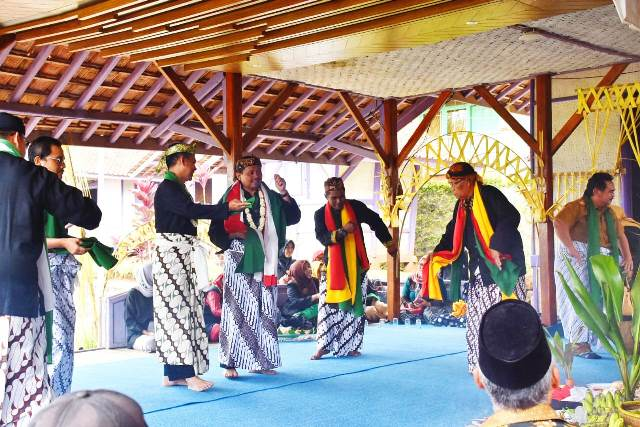

Tradisi Ngalaksa adalah upacara adat masyarakat Rancakalong, Sumedang, yang diselenggarakan sebagai ungkapan syukur kepada Tuhan atas hasil panen padi yang melimpah. Upacara ini dilakukan setelah musim panen, dengan membawa laksa (makanan dari beras dan kelapa) yang menjadi simbol kesuburan dan kemakmuran.
Dalam prosesi Ngalaksa, masyarakat mengenakan pakaian adat Sunda dan melakukan arak-arakan sambil membawa hasil bumi, laksa, dan sesaji ke tempat upacara. Iringan musik tradisional seperti Gondang dan Tarawangsa menambah suasana sakral dan meriah.
Ngalaksa tidak hanya sekadar ritual, tetapi juga menjadi momen kebersamaan, mempererat hubungan antarwarga, dan mengingatkan pentingnya menjaga kelestarian alam. Hingga kini, Ngalaksa tetap dilestarikan sebagai salah satu warisan budaya tak benda khas Sumedang.
Zaman dahulu pada tahun 1620-an, pada masa pemerintahan Suryadiwangsa di Sumedang, keadaan sedang sibuk. Saat itu wilayah Sumedang berada dalam kekuasaan Kerajaan Mataram. Karena merasa tidak aman, masyarakat Sumedang melarikan diri ke dua tempat yang berbeda. Para Aparat Pemerintahan pergi ke Dayeuh Luhur, sebagian lagi yaitu para Budayawan lari ke Rancakalong. Saat itu, Kerajaan Mataram memiliki rencana untuk menyerang VOC ke Batavia. Maka ditentukan bahwa pusat perbekalan perang Kerajaan Mataram ada di Cirebon yang saat itu dipimpin oleh Dipati Ukur. Bahan pangan, terutama padi di seluruh wilayah Kerajaan Mataram harus dikirim ke Cirebon. Begitu pun Sumedang, bahan pangan seperti padi, palawija, dan sebagainya habis diberikan ke Cirebon. Tentunya saat itu di Sumedang mengalami paceklik atau kesusahan pangan. Melihat keadaan tersebut, masyarakat memiliki inisiatif mengirimkan utusan ke Cirebon. Ada 13 orang utusan yang dipimpin oleh Jatikusumah mempunyai tugas untuk membawa benih padi dari Cirebon ke Sumedang. Tetapi setelah 3 tahun ternyata tidak membuahkan hasil. Ini karena ketatnya pengawasan dari penjaga Cirebon. Para utusan tertangkap, digeledah pada saat membawa benih padi. Oleh karena itu Jatikusumah meminta kepada Pemerintah Sumedang untuk mencarikan seniman Tarawangsa. Saat itu Sumedang langsung mengutus 2 orang seniman Tarawangsa untuk pergi ke Cirebon. Dengan kepintaran 2 utusan tadi mereka berpura-pura menjadi pengamen, akhirnya benih padi pun bisa sampai ke Sumedang. Sejak saat itu masyarakat Sumedang tidak lagi mengalami paceklik karena benih padi yang ditanam hasilnya selalu baik. Setelah mengetahui di Rancakalong hasil panen sangat melimpah, diputuskan Sumedang harus mengirim padi ke Cirebon dalam bentuk makanan yang sudah matang. Saat itu masyarakat Rancakalong mengolah padi menjadi suatu makanan yang disebut laksa, serta setiap panen harus menyerahkan ke Cirebon untuk bekal perang. Sejak saat itu, kebiasaan membuat laksa itu dijalankan setelah panen, serta mengirimkannya ke Cirebon. Lama-lama para pembuat laksa meninggal karena usianya yang sudah tua. Akhirnya semuanya meninggal, meninggalkan 1 anak yang berumur 12 tahun. Selanjutnya diangkat oleh seorang warga Desa Rancakalong, sampai berumur 35 tahun. Dari anak itu berumur 12 tahun hingga 35 tahun, kebiasaan membuat laksa berhenti dan berlanjut lagi sampai sekarang.
Upacara adat Ngalaksa dianggap sebagai kegiatan tradisi yang bersifat sosio religius. Nilai kemasyarakatan berkaitan dengan sifat religius tentunya membutuhkan pemikiran yang matang sehingga fungsi dan maksud adanya upacara sejalan dengan tujuan diadakannya upacara. Menurut tradisi, dulunya upacara adat Ngalaksa dilaksanakan 3 atau 4 tahun sekali. Tetapi mulai tahun 1985 setelah para sesepuh adat mengadakan musyawarah dengan Dinas Kebudayaan dan Pariwista Kabupaten Sumedang, upacara menjadi dilaksanakan setahun sekali, yaitu pada bulan Mei atawa Juli. Upacara ini dilaksanakan di lima rurukan yaitu di Rurukan Rancakalong, Rurukan Cibunar, Rurukan Cijere, Rurukan Legok Picung, dan Rurukan Pasir Biru.[5] Sekarang ngalaksa telah menjadi agenda rutin Kabupaten Sumedang yang mandiri karena diselenggarakan berdasarkan Peraturan Bupati Sumedang Nomor 113 Tahun 2009 tentang Sumedang Puseur Budaya Sunda (Sumedang sebagai pusat budaya Sunda)